Project context and approach
This artifact explains six components: layers, neurons, weights, activation functions, loss functions, and optimization algorithms. The challenge is to connect each definition to its role in a complete learning process. An editable network diagram shows forward data flow; a training-loop diagram separates gradient calculation from parameter updates.
Skills demonstrated: technical communication, neural network fundamentals, feature engineering, experimental interpretation, and visual presentation.
View all 13 slides on this page
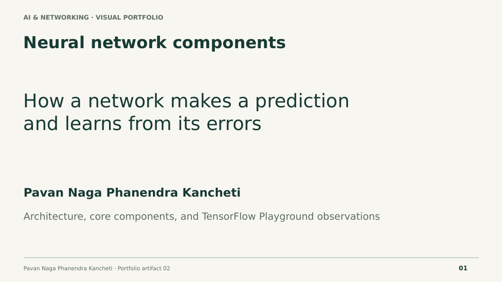

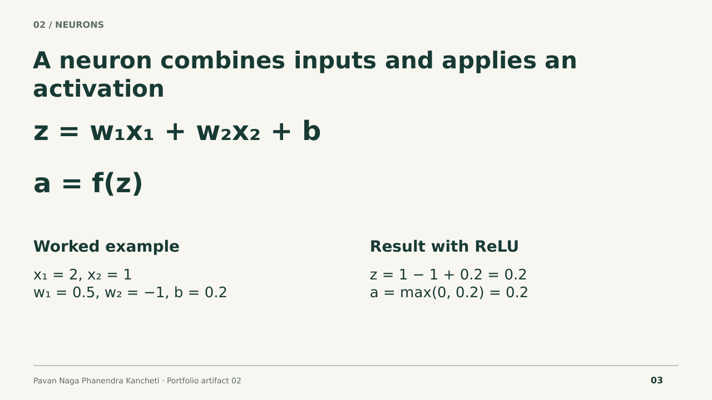
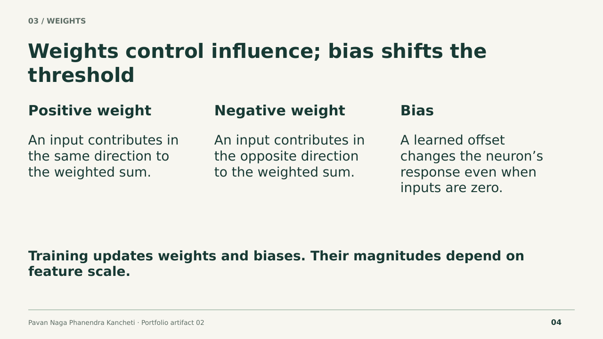
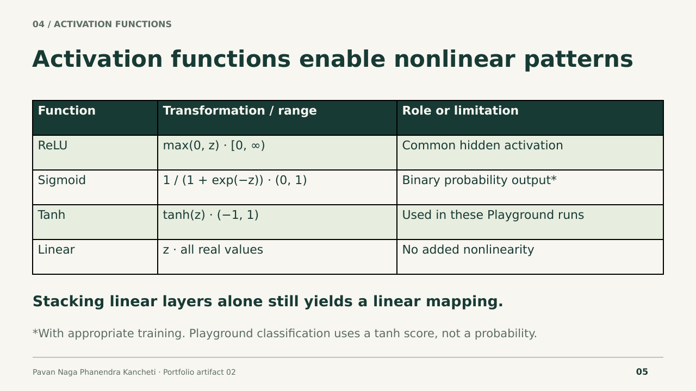
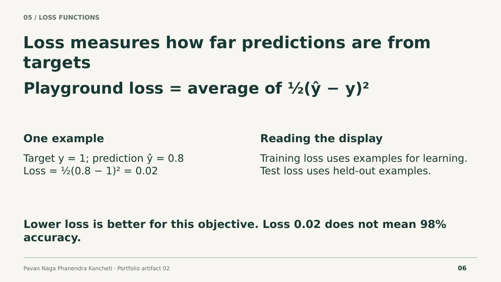
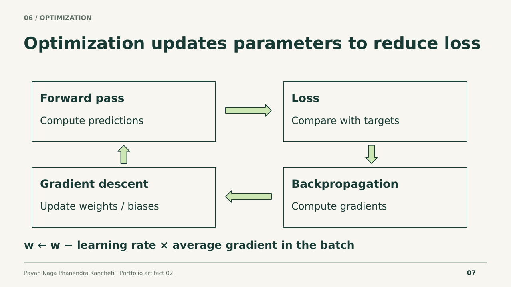
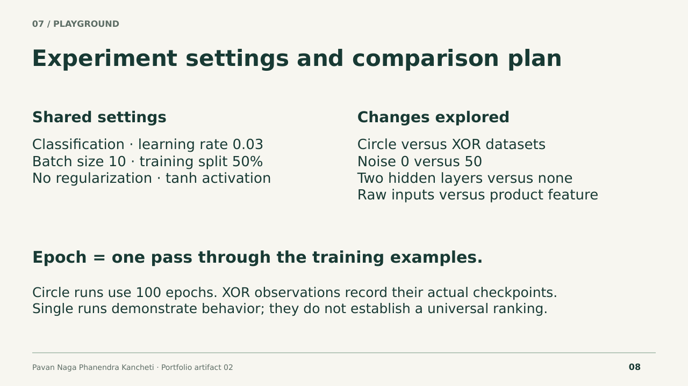
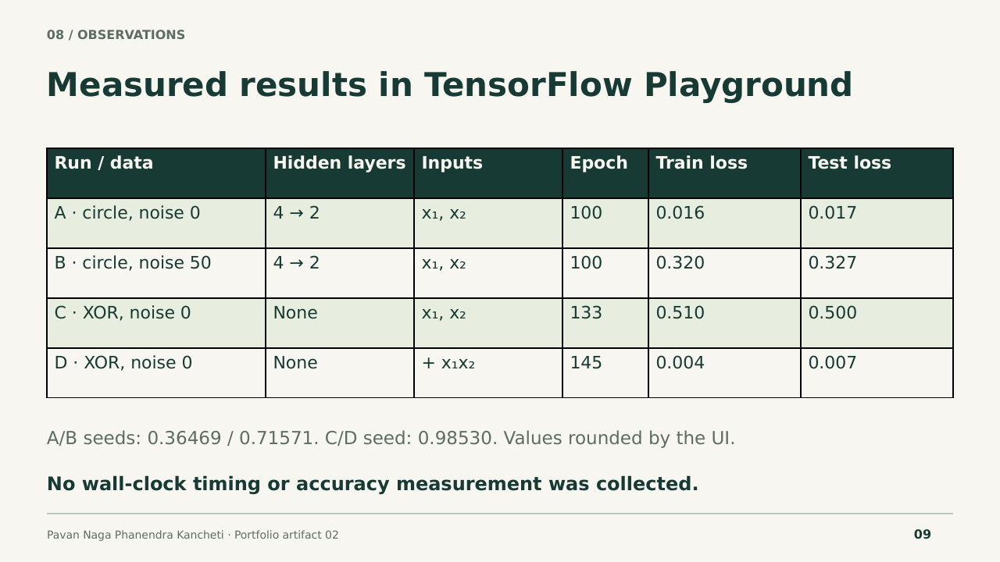
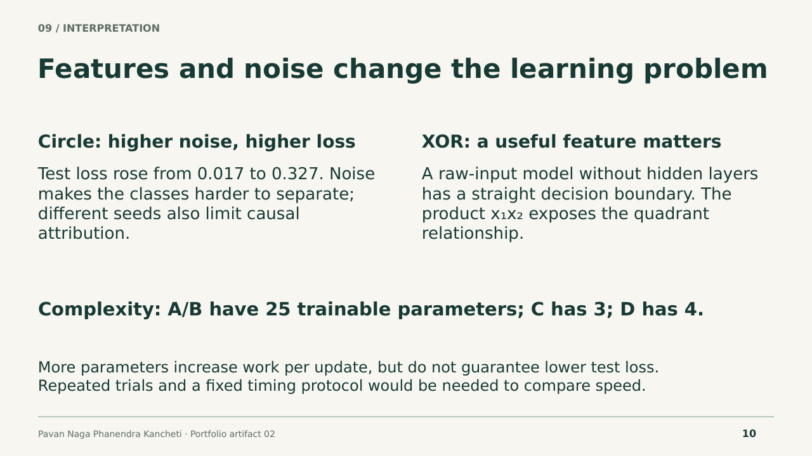
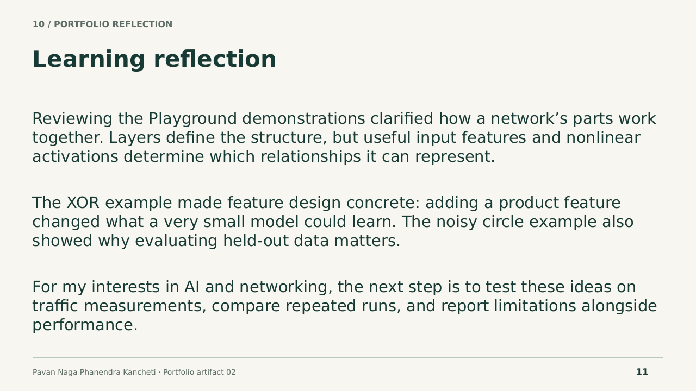
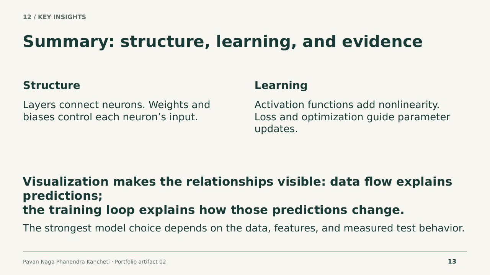
Playground observations
All demonstrations used classification, learning rate 0.03, batch size 10, a 50% training split, tanh, and no regularization. Hidden-layer notation gives the number of neurons in each hidden layer. Inputs were x₁ and x₂; run D also included x₁x₂.
| Run | Dataset / noise | Hidden layers | Epoch | Training loss | Test loss |
|---|---|---|---|---|---|
| A | Circle / 0 | 4 → 2 | 100 | 0.016 | 0.017 |
| B | Circle / 50 | 4 → 2 | 100 | 0.320 | 0.327 |
| C | XOR / 0 | None | 133 | 0.510 | 0.500 |
| D (+ product) | XOR / 0 | None | 145 | 0.004 | 0.007 |
In run D, test loss was already 0.014 at epoch 19. A product feature exposes the sign relationship between the two coordinates, allowing a small model to separate the XOR quadrants. Runs A and B show higher loss in the noisier circle example. These are observations from specific runs, not estimates of general model performance.
The demonstrations were recorded in TensorFlow Playground for this artifact. Seeds were 0.36469 (A), 0.71571 (B), and 0.98530 (C/D). Initialization and the unequal XOR checkpoints limit direct comparisons. No wall-clock timing or accuracy measurement was collected. Playground reports average half-squared error; loss is not an accuracy percentage.
Learning reflection
Reviewing the Playground demonstrations helped me understand how neural network components work together. Layers organize information, neurons combine weighted inputs, and activation functions allow a network to represent nonlinear relationships. I also learned to separate backpropagation, which calculates gradients, from the optimization step that updates parameters.
The XOR comparison made feature engineering especially clear. A product feature exposed a relationship that the raw-input model without hidden layers could not represent with a straight decision boundary. The circle examples showed how noisy data can make classification harder. These observations reminded me that low training loss alone is not enough; held-out performance and the conditions of an experiment also matter.
Organizing the presentation around a network diagram and a training loop helped me connect the mathematics to the visual explanation. My next goal is to apply this understanding to network traffic data, compare repeated trials, and consider false alarms as well as overall performance. This artifact complements my algorithm field guide by explaining how one model family learns internally.
Sources and further exploration
- Google: Nodes and hidden layers
- Google: Activation functions
- Google: Training using backpropagation
- TensorFlow Playground
- TensorFlow Playground source code
Source notes are included in the PowerPoint. The final slide summarizes why visualizing neural networks helps explain predictions and learning.